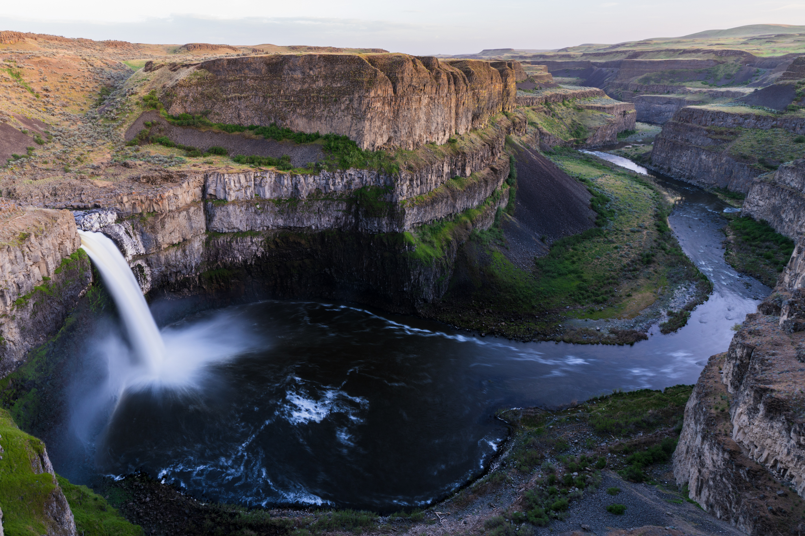
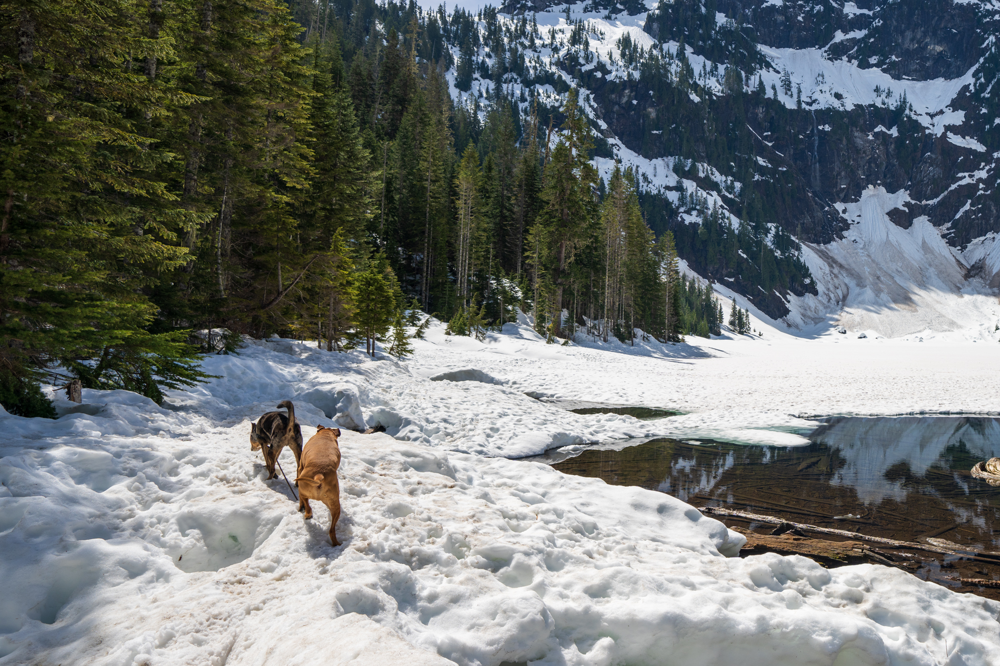

Palouse Falls
Palouse Falls
Washington, USA - May 1, 2021
The official state waterfall of Washington, Palouse falls is a spring paradise in the middle of the Eastern Washington plains.
Length: 1.4 mi/2.3 km round-trip Elevation Gain: 384 ft. Dogs: Yes
Conditions: As of May 2021, the waterfall is in a gorgeous state from the spring rains. The trail is short, but a scramble. Experienced hikers can scramble from the top viewing points all the way down to the waterfall itself, but it is consistently rocky and steep. Otherwise, this is a short trail, and some of the best views can be had from the trailhead parking lot, or shortly after.
The canyons here are carved from ancient glacial flooding, creating an incredible landscape among the plains, desert and rolling hills.
Lake 22

Lake 22
Washington, USA - April 29, 2021
Perched up at the northern shoulder of Mt. Pilchuck, Lake 22 is a beautiul alpine lake hike that is perfect for the spring.
Length: 5.4 mi/8.7 km round-tripElevation Gain: 1350 ft.Dogs: Yes
Conditions: As of April 2021, a late winter avalanche has taken out part of the trail about 1.7 mi in. Two ropes are placed to allow for easy ascent of the ridge, however able-footed individuals might be able to scramble up without ropes. There is still decent snow pack that is actively melting the last 0.25-0.5mi leading to the lake. Microspikes and/or poles still recommend, but not needed for experienced hikers. The lake itself is actively thawing, with a beautiful small portion visible. Mini-avalanches are consistently falling from the granite walls behind Lake 22, making for quite the show during lunch.

As you can see, the thaw of the lake is just beginning. The combo of glacial water, snow, and evergreen is simply spectacular this time of year. The lake itself has thawed enough for a chilly swim for you and the dogs. The frozen parts should not be walked on beyond this point in the season.
This hike is great for dogs! There's a few things to keep in mind for the spring. As mentioned above, the slide at 1.7mi in will require the dog to either go up on their own or be lifted up. At the lake, there are plenty of sink spots in the quickly thawing snow, so be careful if done during spring!